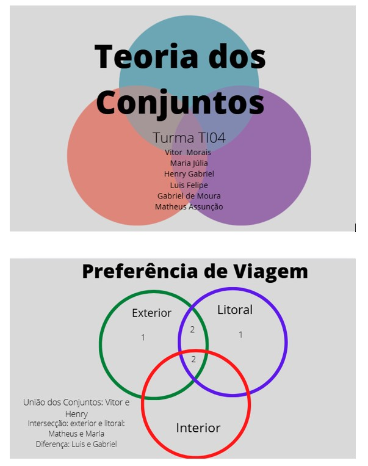

O projeto abaixo aborda a teoria dos conjuntos, um ramo da matemática que trata da classificação de indivíduos com base em características compartilhadas ou distintas em relação a determinados grupos. Ele busca estabelecer um aprendizado sólido para entender as preferências das pessoas em situações como: aquelas que preferem A, as que preferem B e as que gostam de ambos, A e B. Essa análise é fundamental para organizar e compreender padrões de comportamento. Além disso, a aplicação da teoria dos conjuntos permite calcular com precisão o número de indivíduos que preferem exclusivamente algo específico.
Por meio de diagramas, como o de Venn, é possível visualizar as interseções e diferenças entre os grupos. Isso facilita o entendimento de como as preferências estão distribuídas e auxilia em tomadas de decisão fundamentadas. Assim, o projeto tem como objetivo tanto o aprendizado quanto a aplicação prática dessa teoria. Segue uma atividade do 1° ano do ensino médio sobre esse tema:
Observação: O trabalho mencionado foi passado pelo professor Tiago de matemática
